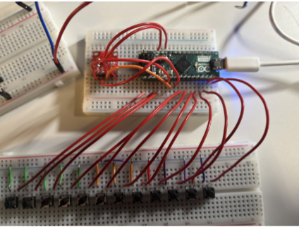
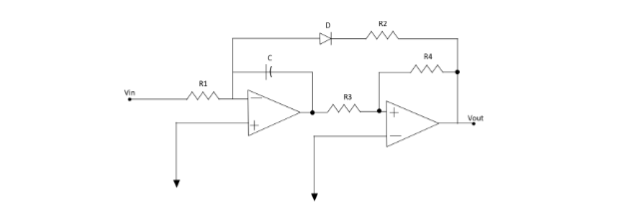
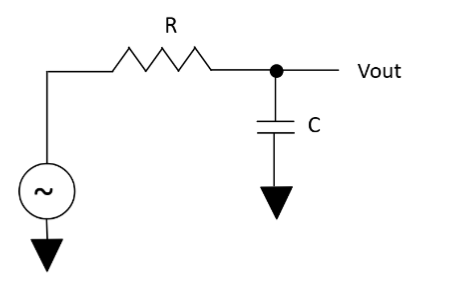

Key Input Interface and DAC
While our original design at first implemented a simple resistor ladder as the DAC, we
pivoted to a more integrated approach by using an Arduino Micro board interfaced with a
separate MCP4725 DAC chip. The primary reason we pivoted is because the digital DAC
is able to specify our target voltage with extreme precision given the C++ code we wrote
in the Arduino sketch. In this scenario, each button is fed into a data pin on the micro,
which is then processed to output a constant voltage. Our DAC and its wired configuration
is detailed below.

Figure 2: Digital DAC Module
The purpose of this block is to generate a unique DC voltage for each note/button. These DC
voltages and their corresponding frequencies and notes are summarized in the table below
when testing the actual circuit.
| Note |
Frequency
(Hz) |
VOut (V) |
|
A4 |
440 |
0.35 |
|
A#4/B♭4 |
466 |
0.37 |
|
B4 |
494 |
0.39 |
|
C5 |
523 |
0.42 |
|
C#5/D♭5 |
554 |
0.45 |
|
D5 |
587 |
0.475
|
|
D#5/E♭5 |
622 |
0.505
|
|
E5 |
659 |
0.535
|
|
F5 |
698 |
0.575
|
|
F#5/G♭5 |
740 |
0.615
|
|
G5 |
784 |
0.65 |
|
G#5/A♭5 |
831 |
0.70 |
Table 1: DAC design for 5th octave
Voltage-to-Frequency Converter
The voltage-to-frequency converter is the core of the system. It uses a relaxation oscillator
built from two op-amps: an integrator and a Schmitt trigger comparator. The integrator
charges a capacitor linearly, and the comparator resets it via a diode once a threshold is
reached. This produces a sawtooth waveform whose frequency increases with input voltage.
Shown below is the schematic of the circuit that we utilized for the design:

Figure 3: Voltage-to-Frequency Converter Schematic
To begin with analysis of this circuit, we treat one complete cycle as two linear phases: with
the diode state indicated as below.
|
Comparator output |
Diode
state |
Integrator slope \(\dot{V}_x\) |
|
\(V_{out} = +V_{CC}\) |
OFF |
\(\dot{V}_x = -\frac{V_{in}}{R_1 C}\)
|
|
\(V_{out} = -V_{CC}\) |
ON |
\(\dot{V}_x = -\frac{V_{in}}{R_1 C} - \frac{V_{out}}{R_2 C} = \frac{V_{CC}}{R_2
C} - \frac{V_{in}}{R_1 C}\)
|
The slopes follow directly from KCL at the integrator summing-node (\(V_x\) is the integrator
output):
$$ \frac{V_{in}}{R_1} + \frac{V_{out}}{R_2} + C\dot{V}_x = 0 \implies \dot{V}_x = -
\frac{V_{in}}{R_1 C} - \frac{V_{out}}{R_2 C} $$
Schmitt-trigger thresholds. With the non-inverting input of the second op-amp
tied to the divider \(R_3-R_4\),
$$ 0 = V_+ = \frac{R_4}{R_3 + R_4}V_x + \frac{R_3}{R_3 + R_4}V_{out} \implies V_x = \pm
\frac{R_3}{R_4}V_{CC} \equiv \pm V_H $$
Hence the triangular ramp swings between \(\pm V_H\) with
$$ V_H = \frac{R_3}{R_4}V_{CC}, \quad \Delta V = 2V_H. $$
Time per phase.
$$ t_{OFF} = \frac{\Delta V}{|\dot{V}_x|_{OFF}} = \frac{2V_H R_1 C}{V_{in}}, $$
$$ t_{ON} = \frac{\Delta V}{\dot{V}_x|_{ON}} = \frac{2V_H C}{\frac{V_{CC}}{R_2} -
\frac{V_{in}}{R_1}} = \frac{2V_H C R_1 R_2}{V_{CC}R_1 - V_{in}R_2}. $$
Period and frequency. Adding the two intervals,
$$ T = t_{OFF} + t_{ON} = 2V_H C \left[ \frac{R_1}{V_{in}} + \frac{R_1 R_2}{V_{CC}R_1 -
V_{in}R_2} \right] = \frac{2V_H C V_{CC} R_1^2}{V_{in}(V_{CC}R_1 - V_{in}R_2)}. $$
Substituting \(V_H\) and inverting gives the frequency:
$$ f(V_{in}) = \frac{1}{T} = \frac{R_4 V_{in}}{2R_1 R_3 C V_{CC}} - \frac{R_2 R_4 V_{in}^2}{2
R_1^2 R_3 C V_{CC}^2} $$
Thus, with this equation we were able to design given components for our circuit. With that
being
said, we picked the following values for each of our components: \(V_{CC} = 5V, R_1 =
100k\Omega, R_2 = 50k\Omega, R_3 = 10k\Omega, R_4 = 100k\Omega,\) and \(C = 10nF\). This
produces the following
expression for frequency as a function of voltage:
$$ f(V_{in}) = 1000V_{in} - 1000V_{in}^2 $$
Next, we needed to process this signal a bit by cutting off certain frequencies while also
amplifying the signal. To do this, we first implemented a low pass filter, of which the
schematic
is shown below in Figure 4.

Figure 4: Schematic of Low Pass Filter
The cutoff frequency for the low pass filter is well known, so we won't be including a full
derivation. That being said the relationship ends up being \(f_{cutoff} = \frac{1}{2\pi RC}\).
In this case
we are targeting the 5th octave (440 Hz - 831 Hz). As such, we decided to cutoff at a bit
above the highest frequency, so we chose \(f_{cutoff} = 1\text{ kHz}\). Thus, given the above
relationship
for cutoff frequency in a low pass filter, we designed the components of the filter to be the
following values: \(R = 10k\Omega\) and \(C = 15nF\).
Finally, we wanted to amplify our signal such that we get a loud enough sound to be played.
To do this, we implemented a non-inverting amplifier using another op-amp. The schematic for
this circuit is shown below in Figure 5.

Figure 5: Non-Inverting Amplifier Schematic
Again, the gain of the non-inverting amplifier is well-known, so we won't be including a full
derivation. That being said, the gain abides by the following relationship: \(A_v = 1 +
\frac{R_1}{R_2}\).
We thought a gain of 5 would be a reasonable amplification factor as to make the produced
sound just loud enough that it would be pleasant for the ears. As such, we designed our
values for each resistor to then be: \(R_1 = 3k\Omega\) and \(R_2 = 750\Omega\).
The final circuit was then constructed and we arrived at the final schematic with each of our
designed values, which is shown below in Figure 6.

Figure 6: Full Voltage-to-Frequency Converter Schematic with Post Processing